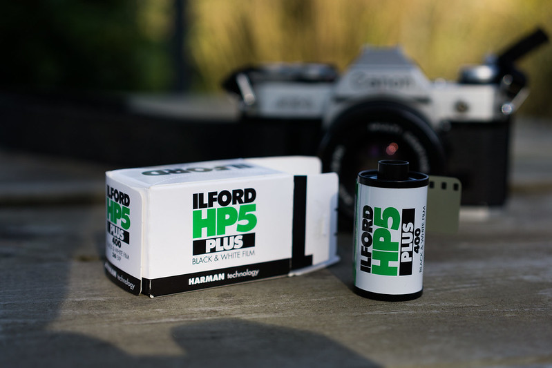

Обзор фотоплёнки ILFORD HP5+ с примерами фотографий

ILFORD HP5+ — одна из самых известных и долгоживущих плёнок. Первый HP (сокращение
от «сверхчувствительный панхроматический») представили в 1931 г. Сегодня она доступна в
рулонах и листах от 35 мм до 20x24 дюймов, поскольку остается одной из самых продаваемых
чёрно-белых пленок из когда-либо созданных.
Краткая история HP5+
Сверхчувствительная панхроматическая плёнка (HP) представлена в 1931 году.
В 1939 г. её модернизировали и переименовали в НР2, 1941 г. — НР3, 1965 г. — НР4, 1976 г. — НР5.
1976 год. Компания Ilford показала на Photokina новую плёнку 400 ISO HP5. Первоначально в мире
ощущалась нехватка этой замечательной плёнки. Первые партии HP5 были исключительно в
формате 35мм и продавались только в Германии, потому что Германия была наиболее прибыльным рынком.
HP5+ представили в 1989 году.
Есть причина, по которой Ilford использует плюс или «+» в названиях своих эмульсий.
HP5 + в одной группе Plus с FP4+ и Pan F+. Пленки линейки Ilford Plus — это все последние
поколения «установленных» эмульсий с ISO 400, 125 и 50.
Другой известной линейкой Ilford является Delta, в которой используется более свежая
технология 1990 года с более мелкой зернистостью (но и более узким динамическим
диапазоном) и меньшей допустимой погрешностью экспозиции.
Любопытно, что многие из улучшений HP5+ по сравнению с его предшественницей, по-
видимому, адресованы фотокорреспондентам (Photo Pro , выпуск 4, 1989 г.). Одним из них была
возможность пушить её до ISO 3200. А ещё более мелкое зерно и немного больше деталей в
тенях, чем у его главного конкурента, Kodak Tri-X.
Спустя 33 года или 91 год с момента своего появления HP5+ по-прежнему пользуется
популярностью среди плёночных фотографов. Хотя пресса больше не использует эту плёнку,
она очень нравится тем, кто участвует в современном аналоговом ренессансе.
Зернистая структура, разрешение, резкость
При съемке с номинальной чувствительностью зернистость Ilford HP5+ выглядит примерно
такого же размера, возможно, немного более зернистой, чем у Kodak Tri-X 400.
Tri-X и HP5+ часто сравнивают из-за их одинакового возраста (более 80 лет на рынке),
чувствительности (ISO 400) и области применения (для фотокорреспондентов).
Илфорд не приводит каких-либо измерений размера зерна или разрешения изображения
для HP5+, хотя я не удивлюсь, если он идентичен Tri-X RMS 17.
На практике зернистость HP5+ не видна на мобильных устройствах при 35-миллиметровом
сканировании (если вы не увеличиваете масштаб). Но если вы хотите избежать этого на
больших дисплеях и печатать, лучше снимать на HP5+ в среднем или большом формате.
Как и у Tri-X, зернистость HP5+ есть, но не критичная, она не портит изображение и мелкие детали.
Зернистость плёнки может быть гладкой или резкой. Гладкая зернистость незаметна, но уберет
некоторые детали. Резкое зерно может помочь выявить некоторые мелкие элементы на ваших
изображениях. Резкость зерна может меняться в зависимости от проявителя, хотя сама пленка
играет значительную роль в ее виде.
HP5+ тяготеет к резкому зерну. Во всех форматах и с большинством проявителей вы
ждёте детализацию, даже с мягкими линзами.
Динамический диапазон и контраст
На бумаге HP5+ показывает 3,5 примерно в 12 ступеней полезного динамического диапазона.
На практике HP5+ может передавать детали в сложных условиях освещения лучше, чем
большинство (если не все) плёнки. Благодаря своему впечатляющему динамическому
диапазону и большой широте плёнка работает со светом лучше, чем некоторые первоклассные
цифровые датчики 2022 года. Естественно, это делает HP5+ подходящим для новичков и для
замера света без экспонометра с помощью Солнечного правила 16.
HP5+ ведет себя как среднеконтрастная плёнка при идеальной экспозиции. Однако она даст
вам больше контраста, если вы недоэкспонируете его, и немного меньше, если вы
переэкспонируете. Все чёрно-белые негативные плёнки делают это, хотя HP5+ делает это
лучше, чем большинство: его тени сохраняют больше деталей, чем многие сопоставимые
пленки (включая Tri-X), а его светлые участки с меньшей вероятностью будут выбиты при передержке.
Руководство по экспозиции Ilford HP5+
Если вам нужно изображение наилучшего качества, экспонируйте Ilford HP5+ при ISO 400 и
проявите в обычном режиме. Вы не разочаруетесь.
Или вы можете замерять HP5+ при ISO 200 и нормально проявить, чтобы снизить
контрастность в сценах с тёмными/резкими тенями. К счастью, эта плёнка сохраняет большой
диапазон тонов в светлых участках; это означает, что вы можете относительно легко «спасти»
свои блики в Photoshop , если ваши изображения кажутся слишком яркими.
Вы можете снимать на пленку Ilford HP5+, как если бы это была пленка с ISO 800, и нормально проявлять.
Фотографии будут иметь большую контрастность, которую вы все подредактируете на постобработке.
Однако, если вы используете push- или pull-обработку HP5+, она, скорее всего, станет более
чувствительной к пере- и недоэкспозиции и потребует более точного замера.
Примеры фото на Ilford HP5+